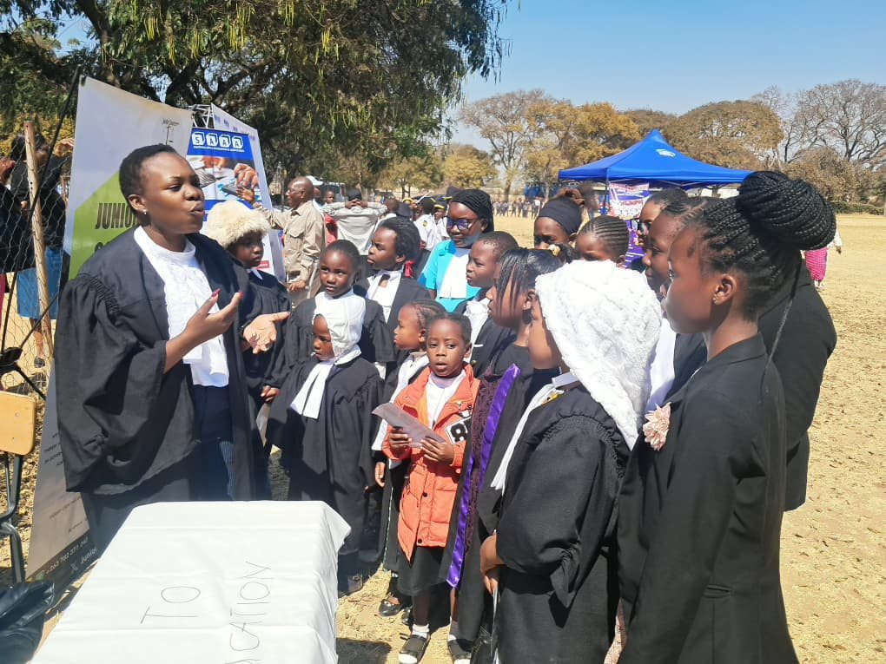
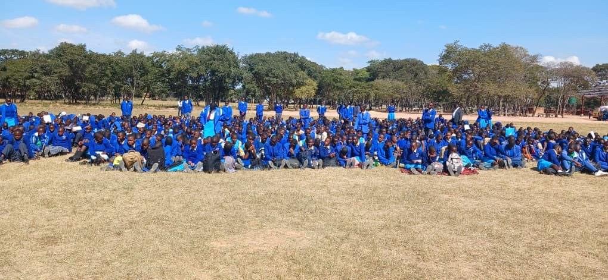
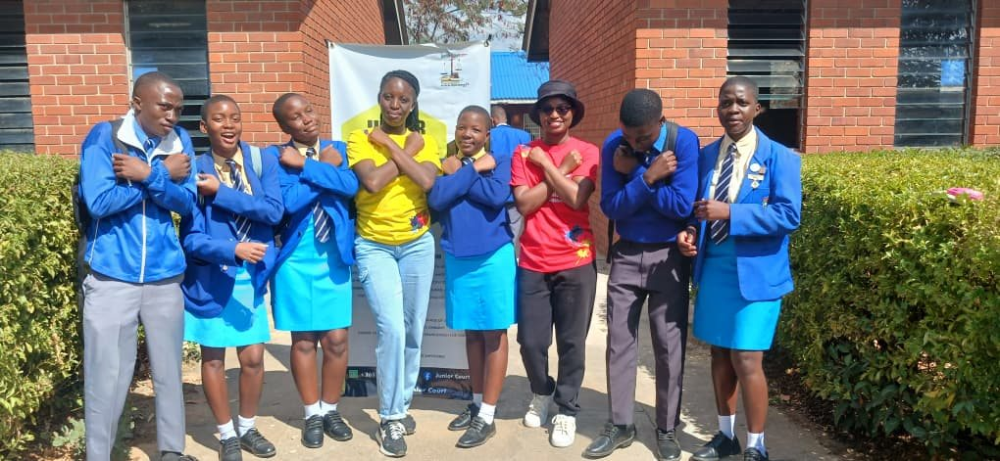
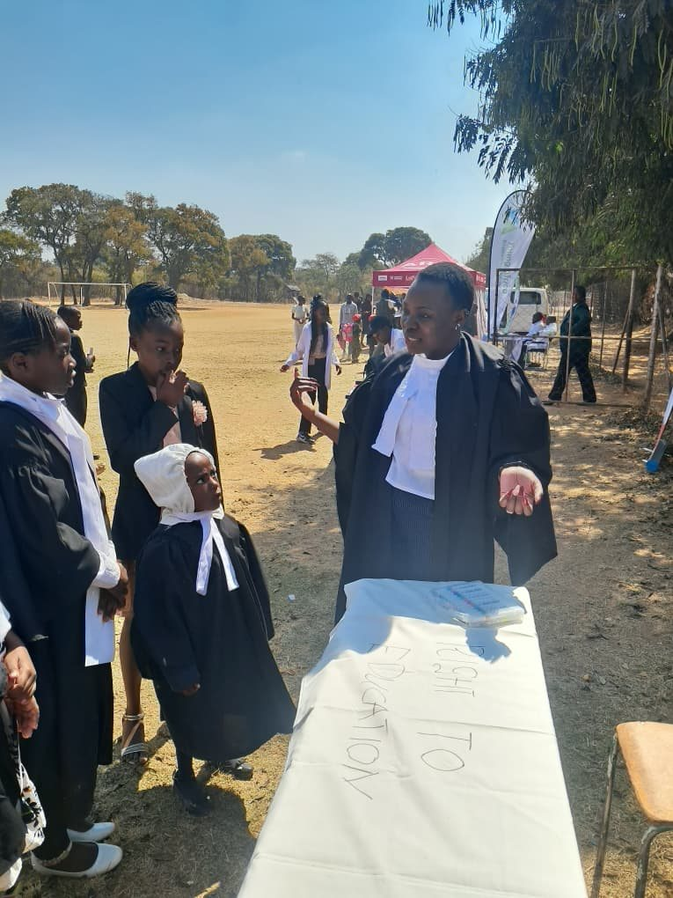
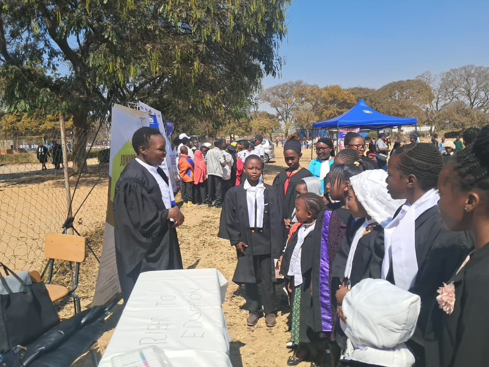
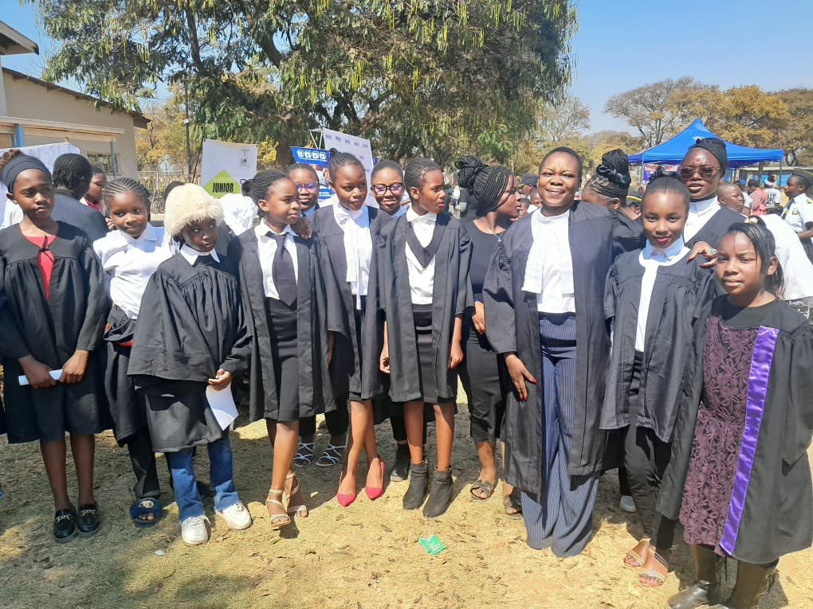
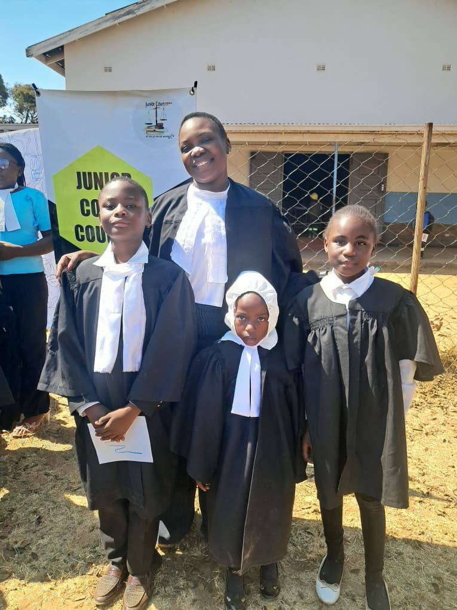
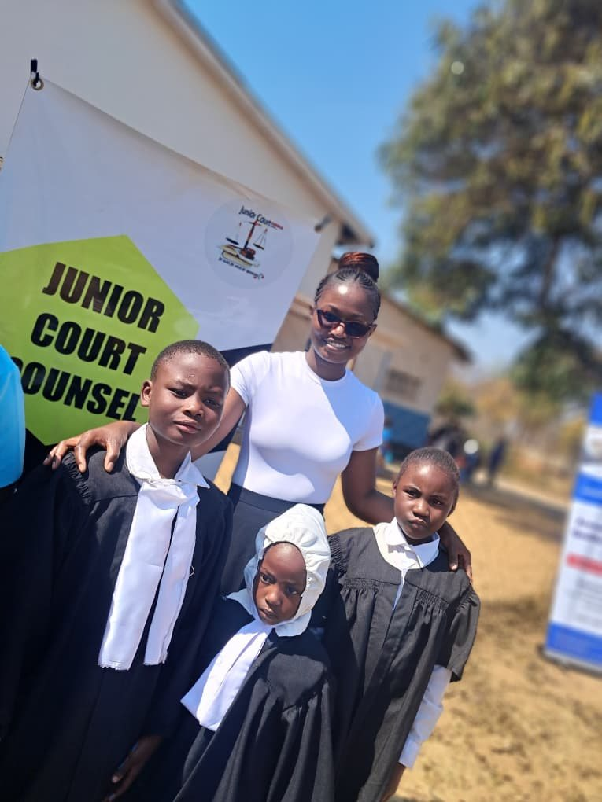
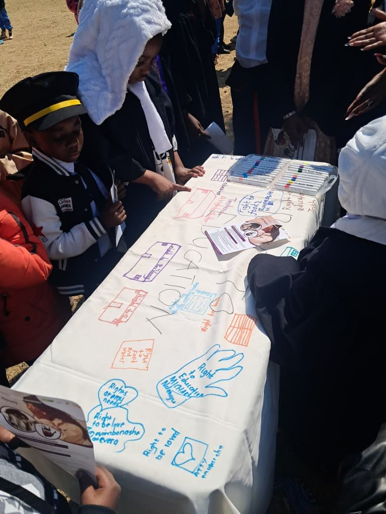
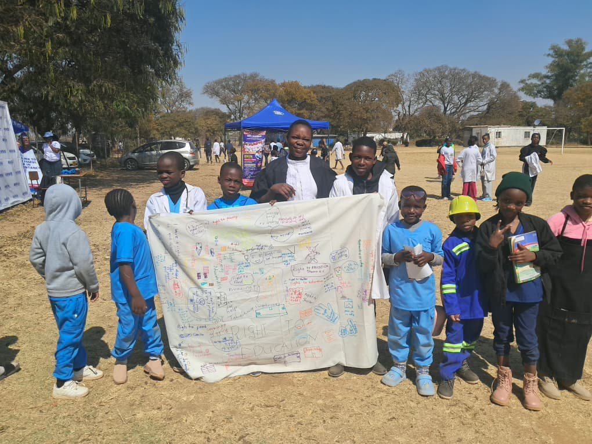

Linking constitutional rights to informed life and career choices — starting with JCC's first Career Guidance Day at Zengeza 1 High School.
On 22 May 2026, the JCC team was welcomed onto the grounds of Zengeza 1 High School for the school's first Career Guidance Day, held in partnership with the school. Director Bridgetti Mambondiani and Communications Officer Tatenda Gabi introduced Junior Court Counsel and the "Picture My Rights" activity to the assembled students as one of the day's featured sessions, alongside the school's broader career guidance programme, with Tania Chipo (Fundraising and Research Officer) rounding out the team on the day.
Each participant traced the outline of their own hand onto a large shared piece of white cloth and, using marker pens, wrote the constitutional right that mattered most to them inside the outline. Given the scale of the turnout, the cloth quickly filled with hundreds of hand tracings in a wide range of colours, forming a collective mural under the banner "Picture My Rights."
Participants traced their hands and wrote their favourite constitutional right inside, using marker pens on a large shared white cloth — a format that let even a very large group take part individually, at scale.
The rights students wrote onto the mural gave a clear picture of how young people at Zengeza 1 High understand and prioritise their constitutional rights. Several broad themes emerged:
This mix of responses — spanning survival needs, family, civic voice, education, and personal autonomy — showed that the drawing exercise successfully created space for students to relate constitutional rights to their own lived realities rather than reciting them abstractly. Facilitators used the shared mural to draw out discussion on how each of these rights is protected under the Constitution of Zimbabwe, closing the loop between the art activity and the day's civic education objective.
JCC_Zengeza_1_Career_Guidance_Day_Report — compiled by Tania Chipo.

A facilitator introduces the Picture My Rights activity to student "junior counsel" at the Right to Education table.

The scale of the day — over 200 students turned out for Zengeza 1 High School's first Career Guidance Day.

JCC team members with Zengeza 1 High School students outside the school building.

A facilitator walks student participants through the Picture My Rights exercise at the Right to Education table.

Explaining the link between constitutional rights and informed career and life choices.

Student participants in Junior Court robes with the JCC facilitation team.

A JCC team member with young participants beside the Junior Court Counsel banner.

The mural in progress — hundreds of hand tracings, each labelled with the right that mattered most to that student.

More of the day's junior counsel, in front of the Junior Court Counsel banner.

The completed "Picture My Rights" mural, held up amid students dressed for the day's wider career guidance programme.
A turnout of over 200 participants — far beyond a standalone JCC event — and successful integration of Picture My Rights into a wider school programme, reaching students who might not otherwise engage with a dedicated rights-awareness event.
Hosting the activity within a school-wide event significantly boosted participation. The hand-and-cloth format scaled well, and students' rights choices revealed a strong link between constitutional rights, family life, and career aspirations — useful for shaping future sessions.
The turnout stretched markers, cloth and materials thin. Future large-turnout events should budget in advance for extra supplies and facilitators so every participating student can be accommodated comfortably.
A running log for this activity. Add a new dated entry each time something changes — a repeat session, new numbers, a new photo set.
Over 200 students took part in the Picture My Rights mural activity as part of Zengeza 1 High School's first Career Guidance Day. Full write-up, photos and the downloadable report are above. Compiled by Tania Chipo.
JCC can bring the Picture My Rights mural activity to your school's next career guidance event.
Get In Touch